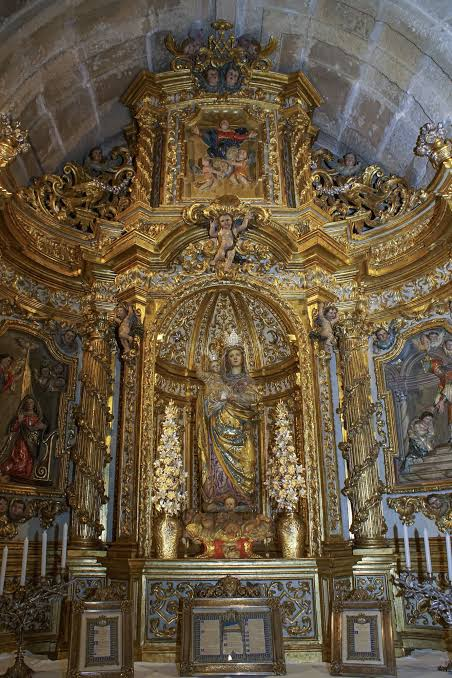
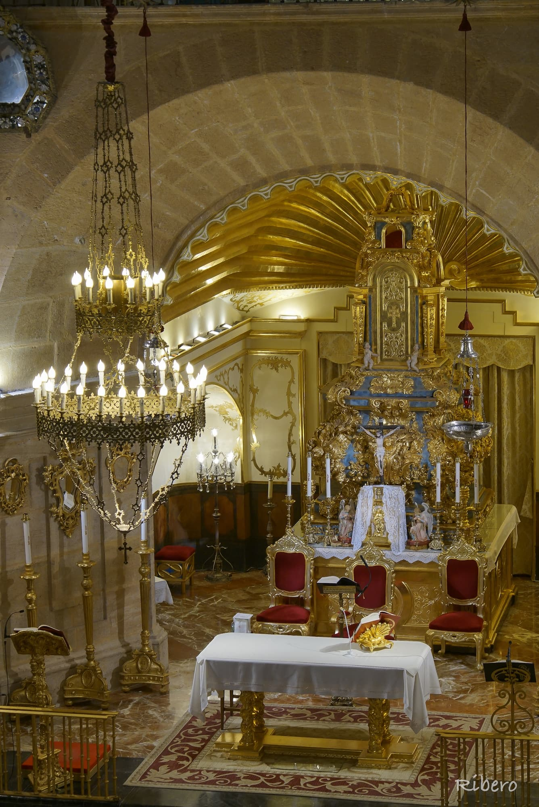
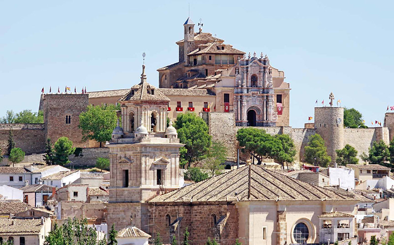

La historia de la Real Basílica-Santuario de la Vera Cruz de Caravaca está indisolublemente unida al milagro de la aparición de la reliquia el 3 de mayo de 1232. Según la tradición, el sacerdote cautivo Ginés Pérez Chirinos se disponía a oficiar misa ante el gobernante almohade Ceyt-Abuceyt cuando dos ángeles bajaron del cielo portando un Lignum Crucis (un fragmento de la verdadera cruz de Cristo), lo que obró la conversión inmediata de los musulmanes presentes. La sagrada reliquia quedó resguardada inicialmente por la Orden del Temple en la antigua fortaleza islámica construida sobre la colina de la ciudad. Con el paso de los siglos y el aumento masivo de los peregrinos, la primitiva e insuficiente iglesia gótica medieval dio paso a la edificación de un gran templo. Este comenzó a construirse en 1617 bajo el mecenazgo del rey Felipe III y el diseño del arquitecto carmelita fray Alberto de la Madre de Dios, siendo finalmente inaugurado en 1703.



El conjunto actual destaca por su espectacular fachada barroca del siglo XVIII, labrada con mármoles jaspeados de la zona, que convive de forma única con la fisonomía militar de sus murallas y torreones de origen árabe. El santuario superó duros avatares históricos, incluido el misterioso robo de la reliquia original en 1934, la cual fue sustituida en 1942 por dos nuevos fragmentos del madero santo regalados por el papa Pío XII. Declarada Monumento Histórico-Artístico en 1944, la iglesia fue consagrada como Basílica Menor en 2007 por el papa Benedicto XVI. Desde finales del siglo XX, el templo consolidó su proyección internacional al ostentar el privilegio papal de celebrar a perpetuidad un Año Jubilar cada siete años, convirtiendo a Caravaca en una de las cinco ciudades santas de la cristiandad.